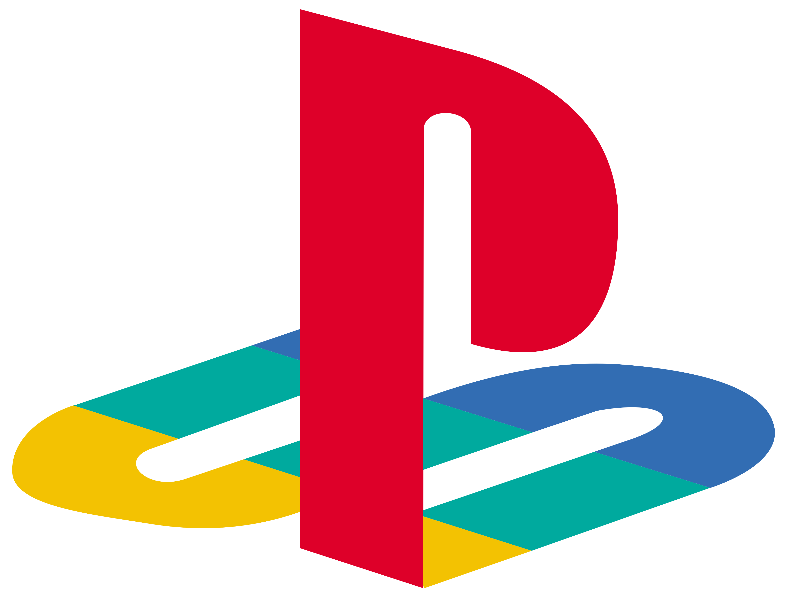
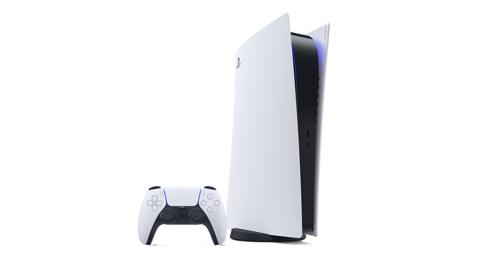
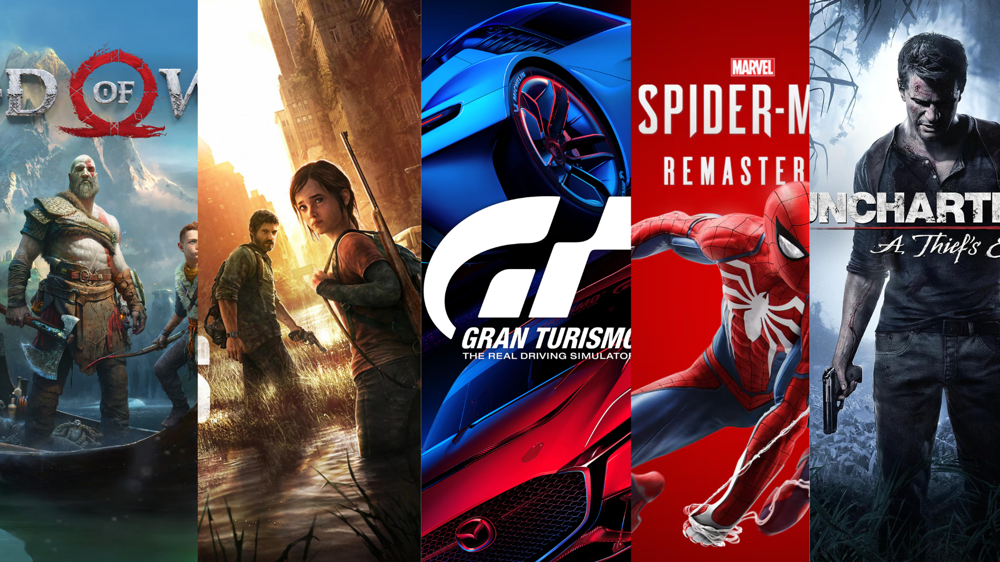

PlayStation

Sobre a empresa
PlayStation é uma marca de videogames desenvolvida pela Sony. Seu primeiro console foi lançado no Japão em 1994 e marcou a entrada da empresa no mercado de consoles domésticos.
A marca ficou conhecida por seus jogos exclusivos, seus consoles e seus controles. Ao longo das gerações, o PlayStation conquistou uma grande comunidade de jogadores em diferentes partes do mundo.
PlayStation 5

O PlayStation 5 foi lançado em novembro de 2020. O console faz parte da nona geração e apresenta melhorias gráficas e de desempenho em relação às gerações anteriores.
Entre suas características estão o armazenamento SSD, o suporte a gráficos em 4K e o controle DualSense, que possui recursos de vibração tátil e gatilhos adaptáveis. Esses recursos ajudam a tornar a experiência dos jogos mais imersiva.
Jogos conhecidos
Algumas das franquias mais conhecidas da marca são God of War, The Last of Us, Gran Turismo, Spider-Man e Uncharted. Muitos desses jogos são reconhecidos por suas histórias e qualidade visual.
